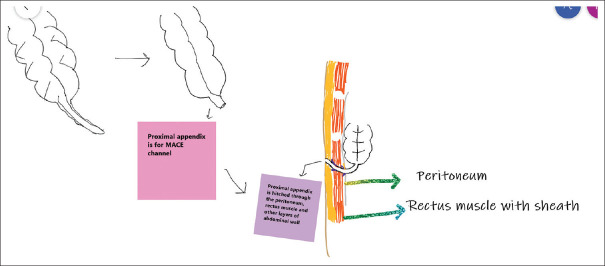
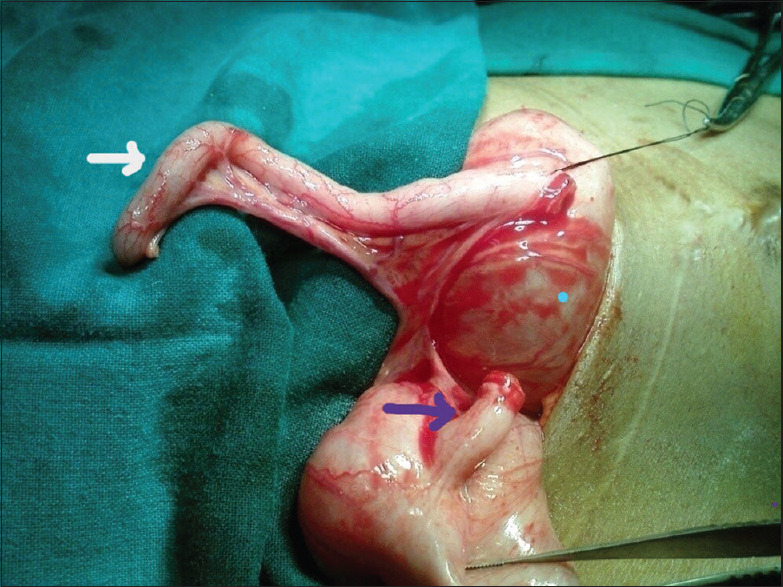
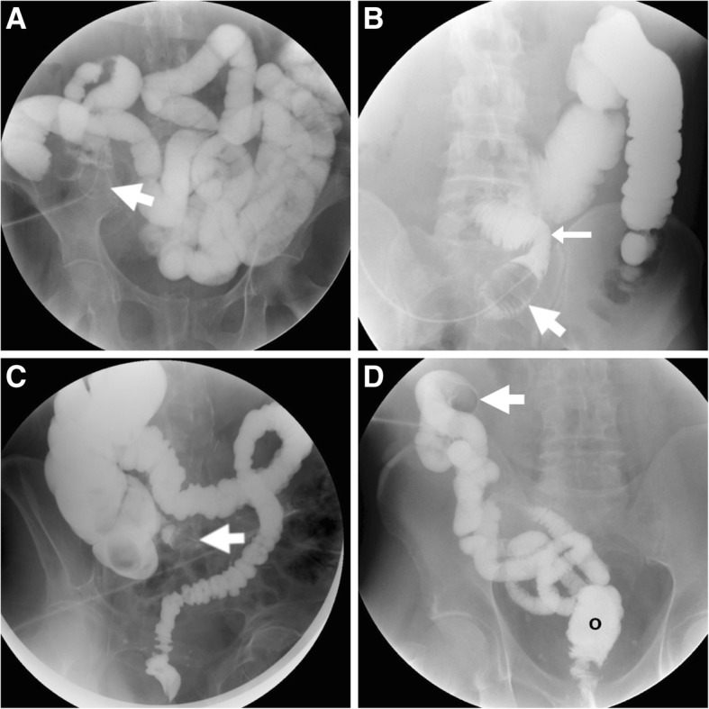
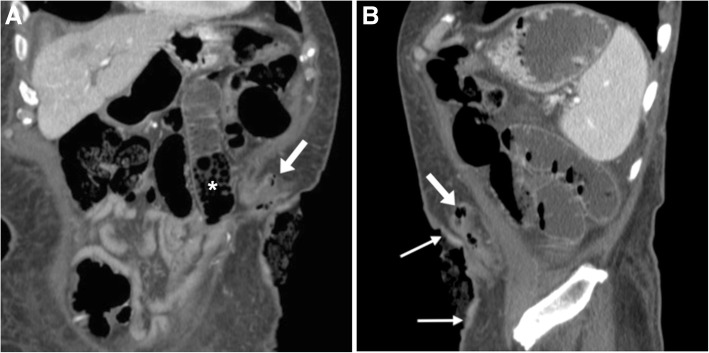

3132 — Biến chứng lỗ thông ACE (appendicostomy / Malone) ở trẻ: hẹp da–niêm 37,8%, mổ lại 33,3% — phân biệt hẹp THẬT với thất bại chức năng do ứ phân
Tags: pattern:hep-lo-thong pattern:lo-thong-ruot pattern:sa-niem-mac pattern:u-phan vung:manh-trang vung:thanh-bung protocol:XR-doi-quang-qua-lo-thong protocol:CT-bung protocol:US-thanh-bung
Mức chắc chắn (certainty): tổng hợp y văn (literature synthesis) — ghép 45 trẻ có appendicostomy ở Nam Phi (Pediatr Surg Int 2026, PMC13357437), 17 trẻ mầm non dị tật hậu môn–trực tràng (ARM) (Biomed Res Int 2013, PMC3794643), 29 trẻ MACE không van chống trào, theo dõi 11,5 năm (J Indian Assoc Pediatr Surg 2023, PMC10455713), 35 trẻ đặt button bóng qua nội soi ổ bụng (J Laparoendosc Adv Surg Tech 2018, PMC7364318), 31 trẻ so sánh MACE với cecostomy (Children 2026, PMC13025410) và kỹ thuật chụp đối quang/CT qua lỗ thông (Insights Imaging 2019, PMC6441068). Phần ngưỡng hình ảnh cụ thể của ACE (calibre, góc gập) là suy luận từ kỹ thuật lỗ thông nói chung — ghi rõ tại chỗ; không có ca do nhóm tự chụp.
Câu hỏi thực hành: bé gái 6 tuổi, dị tật hậu môn–trực tràng đã mổ hậu môn nhân tạo, đặt lỗ thông ACE kiểu Malone 8 tháng trước vì són phân hằng ngày. Ba tuần nay bơm thụt qua lỗ thông thấy nước trào ngược ra ngoài, bụng chướng, vẫn són phân "dày" giữa các lần thụt. Bố mẹ xin tăng liều thuốc thụt. Câu hỏi: tăng liều có đúng không, và cần chụp gì trước khi quyết định? Bài chốt ba quyết định: (1) lỗ thông hẹp là biến chứng thường gặp nhất và là chỉ định mổ lại số một — hẹp da–niêm 37,8%, mổ lại 33,3%, trung vị 5,5 tháng sau mổ (PMC13357437); (2) trước khi tăng liều, phải trả lời "hẹp thật hay thất bại chức năng" bằng đo calibre + đối quang bơm qua lỗ thông: kênh phải qua được ống 8–10 Fr (2,7–3,3 mm) — đây là tiêu chuẩn tối thiểu khi tạo kênh (PMC10136733); (3) hẹp nhẹ xử lý bằng nong tại nhà (7/29 ca trong loạt 11,5 năm, 24,1%) — chỉ ~1/3 cần mổ lại, nên đừng mổ sớm (PMC10455713, PMC13357437).
1. Tổng quan bệnh học – cơ chế hình ảnh: vì sao lỗ thông hay hẹp ở đúng chỗ da–niêm
- Bản chất phẫu thuật (pathology): lỗ thông ACE (antegrade continence enema, ACE) đưa ruột thừa (hoặc một ống tạo từ ruột non — neoappendicostomy kiểu Monti) ra da, để bơm dịch theo chiều xuôi làm sạch đại tràng. Kênh gồm 3 đoạn: (a) lỗ da–niêm (mucocutaneous junction), (b) đoạn trong thành bụng (qua cân cơ thẳng — nơi ruột thừa được khâu dính từng lớp, ảnh sơ đồ dưới), (c) đoạn trong ổ bụng tới manh tràng.
- Điều kiện hình học để làm được Malone (ngưỡng định lượng, PMC10136733): ruột thừa dài ≥ 4 cm, có ≥ 1 mạch mạc treo nuôi, và lòng đủ rộng để qua ống 8–10 Fr (2,7–3,3 mm). Không đủ 3 điều kiện → phải neoappendicostomy (Monti/ống da) chứ không cố dùng ruột thừa.
- Vì sao hẹp đúng ở chỗ da–niêm: đây là nơi niêm mạc ruột (biểu mô trụ, tiết nhầy) gặp da (biểu mô lát), chịu sức căng khi kênh bị kéo ra da + thiếu máu viền do thắt mạch mạc treo + co rút vết thương trong 4–8 tuần đầu. Kết quả là vòng xơ co quanh lỗ — đó là lý do trung vị thời điểm mổ lại chỉ 5,5 tháng (PMC13357437) chứ không phải nhiều năm sau.
- Vì sao hạt thịt (granulation tissue) lại là chuyện của "thiết bị" chứ không phải của ruột: mọi ống/button lưu (MiniACE, button bóng) cọ sát tạo mô hạt quanh lỗ. Số liệu đối chiếu rất rõ: mô hạt 82,6% ở cecostomy (dùng button) vs 13,5% ở MACE (dùng ruột thừa) (p = 0,001; PMC13025410). Ngược lại, button giúp giảm hẹp: loạt 35 trẻ đặt button bóng chỉ có 1 hẹp phải nong, 1 sa niêm mạc, 1 thoát vị nội (PMC7364318) — tức "đổi hẹp lấy mô hạt".
- Vì sao hẹp gây "són phân" chứ không chỉ gây táo bón: thụt qua lỗ hẹp → dịch trào ngược ra ngoài hoặc xuống không đủ, phân ứ lại phía trên; phân ứ tràn qua hậu môn = són giả (overflow soiling). Đây là lý do tăng liều thụt là sai hướng nếu chưa loại hẹp — càng bơm càng trào.
- Vì sao phải phân biệt với "thất bại chức năng": ngay cả khi kênh thông, thụt vẫn có thể thất bại vì thể tích không đủ (đối quang không dự đoán thể tích hiệu quả, R² = 0,21 ở bài 3100), thời gian giữ không đủ, nhu động đại tràng kém, hoặc không tuân thủ. Một loạt dài hạn cho thấy 78% trẻ ARM "thành công" trên ACE, trong đó một phần còn són nhẹ đêm sau thụt (qua PMC10217060) — nghĩa là "són" không đồng nghĩa "hỏng kênh".
- Vật lý hình ảnh — vì sao chọn đối quang chứ không phải CT trước:
- Đối quang tan trong nước bơm qua lỗ thông cho hình chiếu toàn bộ chiều dài kênh + đại tràng, thấy calibre thay đổi theo mm, thấy rò ra ngoài lòng (extravasation) và thấy dòng chảy — CT chỉ thấy một lát cắt tại một thời điểm.
- CT mạnh ở mô mềm quanh kênh: dày thành, mô hạt, áp-xe, tụ dịch, góc gập, và các biến chứng trong ổ bụng (thoát vị nội, xoắn). Cửa sổ mô mềm + tái tạo sagittal/oblique theo trục kênh là bắt buộc — kênh nằm chéo qua cơ thẳng, lát axial thuần sẽ cắt kênh thành "vài chấm tròn" vô nghĩa.
- Siêu âm đầu dò cao tần ở thành bụng: thấy kênh giảm âm, niêm mạc tăng âm ở tâm, đo được đường kính lòng và thấy mô hạt; dùng để theo dõi trẻ nhỏ, không bức xạ.
- Không có ngưỡng HU đặc hiệu cho mô hạt/dịch quanh lỗ thông — đừng "chốt" bằng đậm độ; chốt bằng bờ, vị trí và bối cảnh lâm sàng.
2. Mẫu hình + chẩn đoán phân biệt theo vị trí (Gamut)
- Mẫu hình cốt lõi: trẻ đã có ACE ≥ 1 tháng, thụt kém hiệu quả mới xuất hiện → hình ảnh hẹp/gập kênh hoặc ứ phân trên X-quang → phân biệt cơ học với chức năng.
- Theo vị trí (location) — quyết định cách xử trí:
- Da–niêm (skin level): hẹp da–niêm (phổ biến nhất, 37,8%), mô hạt (13,5% MACE), co kéo/lõm lỗ thông (retraction), hở da–niêm (dehiscence) gây rò dịch.
- Đoạn trong thành bụng: góc gập (angulation/kink) sau khi kênh đi qua cân cơ thẳng, hẹp đoạn giữa, thoát vị thành bụng quanh lỗ thông.
- Trong ổ bụng: dính/xoắn manh tràng, thoát vị nội (đã gặp 1 ca sau button bóng), sa ruột non quanh kênh.
- Manh tràng: rò/thủng manh tràng khi bơm quá áp lực hoặc khi đặt catheter xuyên qua — biến chứng nặng nhất, cần mổ.
- Toàn thân/chức năng: ứ phân tràn (overflow) do thể tích thụt không đủ, chậm nhu động, không tuân thủ, đau khi đặt catheter (dẫn tới bỏ thụt).
- Gamut "lỗ thông ruột có biến chứng" nói chung (nguồn Insights Imaging 2019, PMC6441068): hẹp/co kéo, sa (prolapse), tụt vào trong (retraction), áp-xe quanh lỗ thông, thoát vị quanh lỗ thông (parastomal hernia), tắc do góc gập, viêm da quanh lỗ thông, rò. ACE chỉ chiếm một phần gamut này nhưng cùng nguyên lý đọc.
- Gợi nhớ STOMA (dùng cho mọi lỗ thông ruột): Stenosis (hẹp) · Torsion/angulation (xoắn/gập) · Obstruction by load (tắc do ứ phân — không phải hẹp) · Mucosal prolapse (sa niêm) · Abscess/infection (áp-xe) — cộng thêm rò dịch (leak).
3. Bảng so sánh phân biệt (ma trận đối chiếu)
| Thực thể (entity) | Hình ảnh điển hình (đối quang qua lỗ thông / CT / siêu âm) | Chốt vào (rule-in) | Chốt loại (rule-out) | Gợi ý xác nhận |
|---|---|---|---|---|
| Hẹp da–niêm (stomal stenosis) | Đối quang: cột thuốc thắt lại đúng tại da, đo được < 8 Fr ở chỗ hẹp nhất, giãn nhẹ phía trên; CT: dày mô mềm đối xứng quanh lỗ, không có ổ dịch | Không đưa được ống 8 Fr qua lỗ + hình thắt cổ chai tại da | Qua 8–10 Fr dễ dàng → không phải hẹp; nghĩ chức năng | Calibre bằng nong/ống thăm dò; đối quang có thước |
| Thất bại chức năng do ứ phân (overflow) | Đối quang: kênh rộng bình thường, đại tràng ứ đầy phân (hình ảnh "khối lốm đốm" — fecal loading), không có chỗ thắt; X-quang bụng: ứ phân lan rộng | Kênh thông + ứ phân lượng lớn + són giữa các lần thụt | Có chỗ hẹp đo được → hẹp thật | Thử tăng thể tích thụt theo mL/kg + đánh giá lại sau 2–4 tuần |
| Góc gập trong thành bụng (angulation) | CT tái tạo sagittal/oblique: kênh gập > 90°, đoạn trên giãn; đối quang: thuốc không lên hoặc ứ tại chỗ gập | Gập nhìn thấy trên tái tạo theo trục kênh + ứ phía trên | Kênh thẳng, thuốc lên đại tràng trong 1–2 phút → loại gập | Tái tạo oblique theo trục kênh, không dùng lát axial |
| Sa niêm mạc (mucosal prolapse) | Lâm sàng: khối hồng nhô ra; CT: quai niêm mạc lồng trong kênh, không có ổ dịch; đối quang: kênh bị chèn một bên | Khối niêm mạc nhô ra khi rặn/bơm | Mô hạt phẳng, ướt, không di động → mô hạt | Soi lỗ thông; đánh giá lại sau khi tháo button |
| Rò dịch quanh lỗ thông / hở da–niêm | Đối quang: thuốc chạy ra ngoài lòng quanh catheter; CT: dịch/dày mô mềm giữa kênh và da | Thuốc ra ngoài lòng kênh | Thuốc chỉ trong lòng, không ngấm ra mô → không rò | Chụp bơm chậm, áp lực thấp, ghi rõ vị trí thoát |
| Áp-xe quanh lỗ thông | CT: ổ dịch có vỏ ngấm thuốc ± khí trong mô dưới da quanh kênh; siêu âm: ổ hỗn hợp âm | Ổ dịch có vỏ + đau/sốt/đỏ | Dày mô mềm đều, không ổ dịch → viêm da/mô hạt | Siêu âm dẫn đường chọc hút; cấy |
| Tắc/xoắn trong ổ bụng (volvulus, internal hernia) | CT: quai ruột giãn + điểm xoắn + mạch mạc treo xoắn, dịch ổ bụng; X-quang: mức khí–dịch | Quai giãn + bối cảnh đau bụng cấp sau ACE | Bụng mềm, không quai giãn, ứ phân lan tỏa → nghĩ chức năng | CT có cản quang cấp cứu; mổ khi có dấu hiệu thiếu máu |

Vì sao kênh đi chéo qua cân cơ thẳng: ruột thừa được khâu dính lần lượt vào phúc mạc → bao cơ thẳng → mô dưới da rồi ra da. Kênh vì thế không thẳng đứng, và đây chính là lý do phải tái tạo CT theo trục oblique thay vì đọc lát axial. Nguồn: J Indian Assoc Pediatr Surg 2023 (PMC10455713), CC BY-NC-SA 4.0.
*Mẹo phẫu thuật quan trọng khi đọc hình ảnh: "ruột thừa chia đôi" (split appendix) dùng đồng thời cho ACE (mũi tên tím) và Mitrofanoff (mũi tên trắng). Loạt lớn cho thấy kỹ thuật chia đôi có tỷ lệ biến chứng 47% và nguy cơ mổ lại gấp hơn 2 lần, phần lớn vì hẹp lỗ thông đơn độc (65%) — nên khi thấy trẻ có hai kênh catheterizable, phải hạ thấp ngưỡng nghĩ hẹp (qua PMC10136733). Nguồn: J Indian Assoc Pediatr Surg 2023 (PMC10455713), CC BY-NC-SA 4.0.*4. Protocol chụp + ngưỡng xử trí
- Bước 0 — khám và đo trước khi chụp: nhìn lỗ thông (mô hạt, sa niêm, lõm), đo calibre bằng ống/nong 8–10 Fr (tiêu chuẩn tối thiểu khi tạo kênh, PMC10136733), hỏi thể tích thụt mỗi lần, thời gian giữ, số lần són. Ba câu này quyết định có cần chụp hay không: nếu calibre tốt + ứ phân nhiều + són giữa các lần → hướng chức năng, thử chỉnh liều trước.
- Bước 1 — đối quang tan trong nước bơm qua lỗ thông (antegrade contrast study / WSC-SE qua lỗ thông) — kỹ thuật chuẩn (PMC6441068):
- Bôi trơn, đưa catheter Foley niệu (loại nhỏ) vào lỗ thông ~15 cm tới lòng đại tràng, bơm bóng vài mL nước muối (đủ giữ, không bơm căng — bóng căng trong manh tràng non nở dễ thủng).
- Bơm dung dịch cản quang tan trong nước pha 1:1 (diatrizoate meglumine/na — Gastrografin), áp lực thấp, bơm tay, theo dõi từng thì trên màn huỳnh quang; chụp panorama + khu trú lỗ thông ở 2 bình diện.
- Đọc 5 điểm: calibre lỗ da, góc gập trong thành bụng, chiều dài kênh tới manh tràng, thuốc có lên đại tràng không (đánh giá chức năng dẫn), và có thoát ra ngoài lòng (rò).
- Bước 2 — CT bụng có cản quang + tái tạo sagittal/oblique theo trục kênh khi: đối quang không giải thích được, nghi áp-xe/thoát vị nội/xoắn, hoặc cần đo độ dày mô mềm trước mổ lại. Có thể kết hợp CT + bơm đối quang qua lỗ thông (bơm iopamidol/iopromide pha 5–10%) để thấy lòng kênh + mô quanh kênh trong cùng một lần (PMC6441068) — cách này đặc biệt hữu ích khi bụng đã mổ nhiều lần.
- Bước 3 — siêu âm thành bụng đầu dò cao tần ở trẻ nhỏ/trẻ cần theo dõi lặp lại: đo đường kính lòng kênh, phát hiện mô hạt, ổ dịch; không dùng bức xạ.
- Ngưỡng xử trí (tổng hợp, có ghi nguồn cho từng mốc):
| Tình huống | Ngưỡng / số liệu | Xử trí |
|---|---|---|
| Hẹp da–niêm nhẹ, vẫn qua được catheter | 7/29 (24,1%) hẹp trong loạt 11,5 năm, xử lý bằng nong tại nhà (PMC10455713) | Nong tại nhà + hướng dẫn, không mổ |
| Hẹp lặp lại / không giữ được calibre | 37,8% hẹp; 33,3% phải mổ lại, trung vị 5,5 tháng (PMC13357437) | Mổ lại: tạo hình lỗ thông, đặt button, hoặc làm lại kênh (neoappendicostomy) |
| Mô hạt quanh lỗ thông | 13,5% (MACE) vs 82,6% (cecostomy button) (PMC13025410) | Bạc nitrate/đốt, vệ sinh; kiểm tra kích cỡ button |
| Sa niêm mạc | 12% phải mổ lại vì sa khi dùng MiniACE (qua PMC10136733) | Đẩy lại + khâu cố định; tái phát → làm lại lỗ thông |
| Thất bại chức năng (kênh thông) | Thể tích thụt hiệu quả 22 mL/kg (5–48) ở ARM (bài 3100) | Tăng thể tích/thời gian giữ, kiểm tra tuân thủ — không mổ |
| Biến chứng nặng (thủng manh tràng, xoắn, thoát vị nội) | Hiếm nhưng đã gặp (1 thoát vị nội/35 trẻ, PMC7364318) | Mổ cấp cứu |
- So sánh để chọn loại lỗ thông (khi tư vấn, không phải khi đọc phim): biến chứng chung appendicostomy 42% vs cecostomy 17% (gộp 2.096 bệnh nhân/40 nghiên cứu); rò dịch 22% vs 3%, nhiễm vết mổ 28% vs 7%, can thiệp thêm 35% ở cecostomy (qua PMC10136733). Nghĩa là cecostomy ít biến chứng hơn nhưng nhiều mô hạt hơn — mỗi loại có "giá" riêng.
flowchart TD
A[Tre co ACE, thut kem hieu qua] --> B[Kham lo thong + do calibre 8-10 Fr]
B --> C{Qua duoc 8 Fr?}
C -->|Khong| D[Doi quang qua lo thong: xac dinh vi tri hep]
D --> E{Chieu dai hep?}
E -->|Hep ngan tai da| F[Nong tai nha 2-4 tuan]
F --> G{Calibre giu duoc?}
G -->|Khong| H[Mo lai: tao hinh lo thong / button / lam lai kenh]
G -->|Co| I[Tiep tuc thut + theo doi]
E -->|Hep dai hoac gap trong thanh bung| H
C -->|Co| J{X-quang: u phan nhieu?}
J -->|Co| K[That bai chuc nang: tang the tich thut theo mL/kg]
K --> L{Do sau 2-4 tuan}
L -->|Con son| M[CT tái tao truc kenh: ap-xe, thoat vi, xoan]
L -->|Do| N[Duy tri che do thut]
M --> H
5. Biến thể bình thường và cạm bẫy
- Kênh xẹp (collapsed tract) là bình thường khi rỗng: trên CT, kênh không bơm căng luôn trông như dải mô mềm mảnh, dễ bị đọc là "hẹp/xơ". Muốn đánh giá calibre phải bơm đối quang hoặc đặt catheter đo — đây là bẫy lớn nhất của CT không bơm.
- "Co kéo lỗ thông" (retraction) ≠ hẹp: ảnh CT kinh điển cho thấy da lõm, kênh xẹp, quai ruột giãn phía trên — cơ chế là tụt kênh vào trong, không phải vòng xơ tại da; xử trí khác (kéo ra/khâu cố định).
- Bơm bóng Foley quá căng: đây là nguyên nhân thủng manh tràng do thủy lực hay gặp ở lỗ thông nhỏ; quy tắc: vài mL, bơm tay, dừng ngay khi trẻ đau.
- CT lát axial thuần: kênh chéo qua cơ thẳng nên xuất hiện thành nhiều "chấm" rời rạc — dễ kết luận "kênh đứt". Luôn tái tạo sagittal/oblique theo trục kênh.
- Nhầm kênh với viêm ruột thừa/mucocele: ở trẻ còn ruột thừa tại chỗ (không dùng ruột thừa làm kênh) hoặc kênh dùng đoạn ruột thừa còn lại, một cấu trúc hình ống ở hố chậu phải có thể bị đọc là viêm ruột thừa; chốt bằng tiền sử mổ + thấy lỗ thông ra da trên cùng lát cắt.
- Mô hạt đọc thành sa niêm mạc: mô hạt phẳng, ướt, dễ chảy máu; sa niêm là khối niêm mạc thật nhô ra khi rặn. Điều trị khác nhau (đốt vs mổ), nên đừng "gộp".
- Thỏa mãn tìm kiếm: đã thấy hẹp lỗ thông vẫn phải đọc toàn bộ khung chậu — tủy căng, hẹp miệng nối hậu môn, ROOF là các nguyên nhân song song gây són ở trẻ ARM (bài 3100, 3133).
- "Són = thất bại" là kết luận sai: 78% trẻ "thành công" vẫn có thể són nhẹ đêm sau thụt (qua PMC10217060). Mục tiêu là khô giữa các lần thụt, không phải khô tuyệt đối.
6. Tự lượng giá — Blind Quiz
Ca 1 — Bé gái 6 tuổi, ARM đã mổ, ACE 8 tháng; 3 tuần nay thụt trào ngược, són phân dày. Nhìn ảnh đối quang qua lỗ thông, mô tả trước.

- Gợi ý lâm sàng: thụt 500 mL nước muối, giữ 10 phút; mẹ thấy nước chảy ngược ra quanh ống.
- Câu hỏi: (1) Ảnh này cho thấy gì và thiếu gì để kết luận hẹp? (2) Ba chẩn đoán phân biệt? (3) Bước tiếp theo?
Bấm để hiện đáp án (findings + chẩn đoán)
- Dấu hiệu: catheter Foley có bóng nằm trong lòng ruột, cột thuốc lấp đầy đại tràng phía trên, không có chỗ thắt cổ chai và không thoát thuốc ra ngoài lòng. Ảnh mẫu này là kỹ thuật chuẩn (bóng giữ tại lỗ thông — mũi tên đậm).
- Thiếu: không có thước đo calibre tại lỗ da → ảnh đối quang một mình không trả lời "hẹp"; phải đo bằng ống 8–10 Fr.
- Phân biệt: (a) hẹp da–niêm, (b) thất bại chức năng do ứ phân/thiếu thể tích, (c) góc gập trong thành bụng.
- Bước tiếp: đo calibre → nếu < 8 Fr chụp đối quang khu trú + nong tại nhà; nếu qua 8–10 Fr thì tăng thể tích thụt theo mL/kg (hiệu quả ~22 mL/kg), đánh giá lại sau 2–4 tuần.
- Nguồn ảnh: Insights Imaging 2019 (PMC6441068), CC BY 4.0 — nguyên bản, giữ nhãn A–D.
Ca 2 — Bé trai 9 tuổi, ACE 1 năm, đau bụng + nôn + bụng chướng 2 ngày. CT bụng có cản quang.

- Câu hỏi: (1) Bất thường nằm ở đâu? (2) Cơ chế gây chướng? (3) Vì sao không được kết luận "hẹp lỗ thông" chỉ từ ảnh này?
Bấm để hiện đáp án
- Dấu hiệu: da lõm tại lỗ thông (mũi tên mảnh), kênh xẹp kéo dài trong mô dưới da (mũi tên đậm), phía trên có quai ruột giãn chứa phân (*) — hình ảnh co kéo + tắc.
- Cơ chế: kênh tụt vào/gập làm dòng thụt không lên được → ứ phân → giãn quai ruột phía trên.
- Vì sao không chốt "hẹp": kênh rỗng, không bơm căng nên luôn trông mảnh — phải bơm đối quang hoặc đo calibre mới phân biệt co kéo/tụt với vòng xơ.
- Xử trí: hồi sức + mổ lại kéo cố định lỗ thông nếu không cải thiện; loại trừ xoắn/thoát vị nội trên cùng CT.
- Nguồn ảnh: Insights Imaging 2019 (PMC6441068), CC BY 4.0.
Ca 3 — Bệnh nhi ARM có hai kênh catheterizable (ACE + Mitrofanoff), thụt kém 4 tháng sau mổ. Bạn hạ hay nâng ngưỡng nghĩ hẹp?
- Câu hỏi: Vì sao bối cảnh này làm tăng xác suất hẹp, và con số nào hỗ trợ?
Bấm để hiện đáp án
- Ruột thừa chia đôi (split appendix) có biến chứng 47%, nguy cơ mổ lại gấp > 2 lần so với kênh đơn, và hẹp lỗ thông đơn độc chiếm 65% các trường hợp phải sửa (qua PMC10136733).
- Vì vậy: đo calibre ngay ở lần khám đầu, không chờ đến khi són nặng; và khi mổ lại nên cân nhắc đổi sang button/neoappendicostomy thay vì nong lặp lại.
- Nguồn ảnh: J Indian Assoc Pediatr Surg 2023 (PMC10455713), CC BY-NC-SA 4.0.
Bài liên quan chéo
- 3100 – Quản lý ruột & kiểm soát đại tiện sau mổ ARM
- 3133 – MRI sàn chậu sau mổ ARM: neorectum, cơ nâng, ROOF
- 3075 – Dị tật hậu môn–trực tràng ở sơ sinh
- 1779 – Hẹp miệng nối sau kéo trực tràng
- 1867 – Táo bón & ứ phân sau kéo trực tràng
Ảnh
images/3132_bien-chung-ace_Anh-mo_JIAPS2023-PMC10455713.jpg— J Indian Assoc Pediatr Surg 2023 (PMC10455713), CC BY-NC-SA 4.0.images/3132_bien-chung-ace_So-do_JIAPS2023-PMC10455713.jpg— J Indian Assoc Pediatr Surg 2023 (PMC10455713), CC BY-NC-SA 4.0.images/3132_bien-chung-ace_Do-quang_InsightsImaging2019-PMC6441068.jpg— Insights Imaging 2019 (PMC6441068), CC BY 4.0.images/3132_bien-chung-ace_CT_InsightsImaging2019-PMC6441068.jpg— Insights Imaging 2019 (PMC6441068), CC BY 4.0.- Nguồn, giấy phép và ghi chú từng ảnh:
images/CREDITS.md.
Không dùng để chẩn đoán độc lập khi chưa có người hướng dẫn.